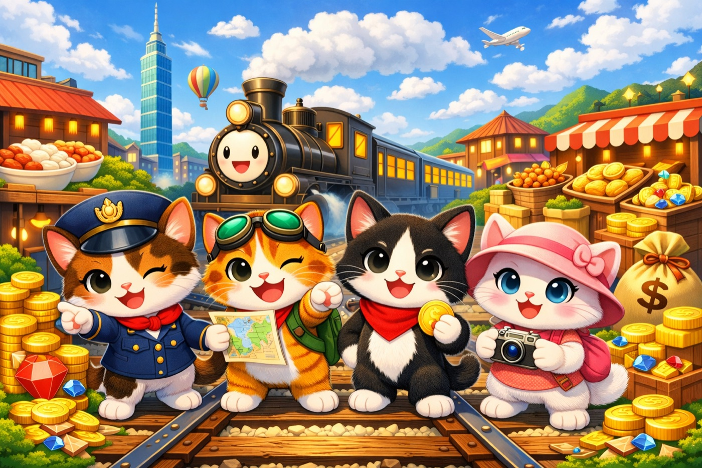
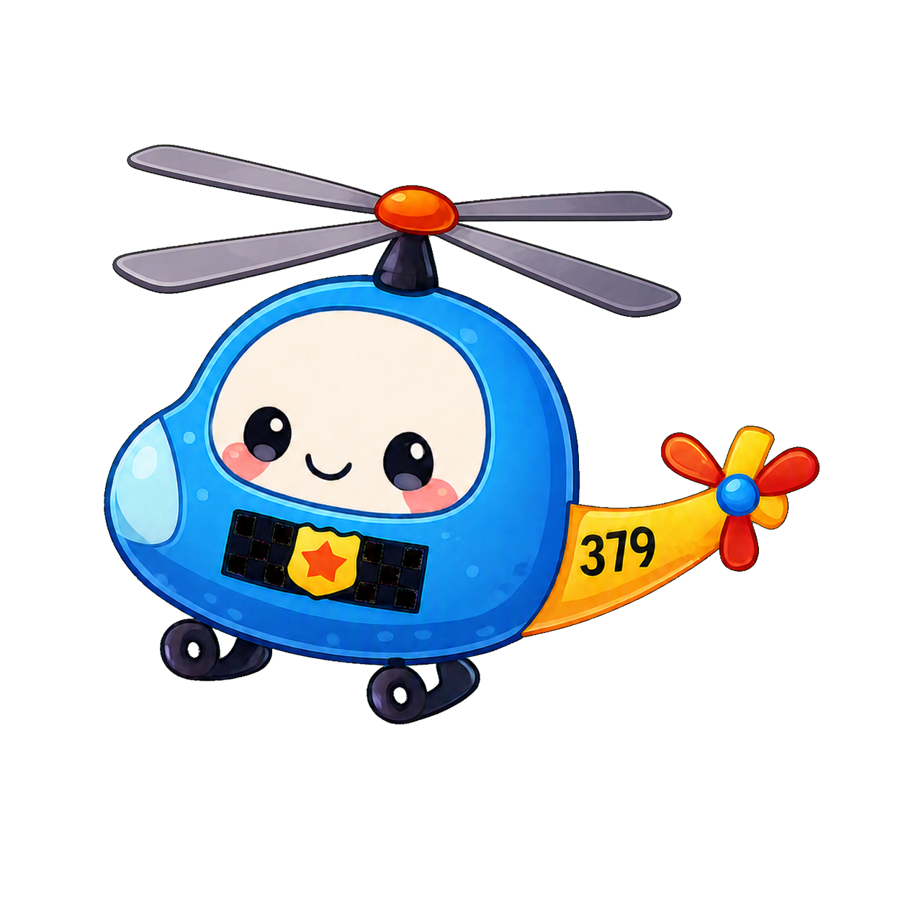
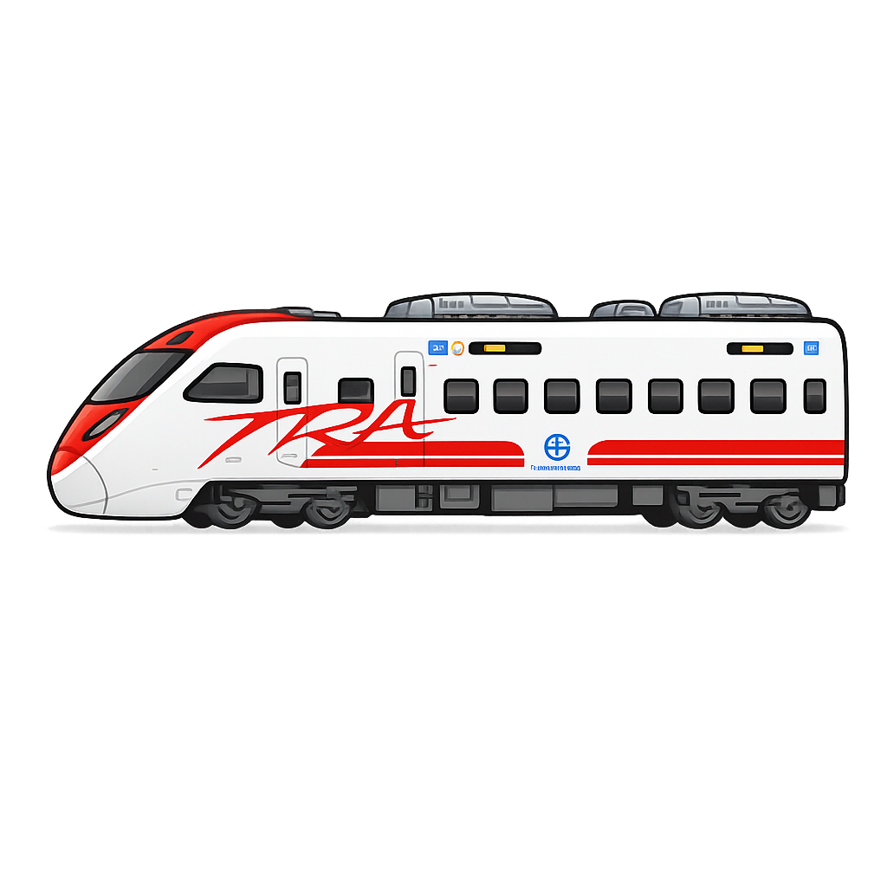

台灣鐵道 × 歡樂大富翁
小球貓電鐵
和貓咪一起，展開全台冒險！
全台 1600+ 個站點，任你闖蕩夜市、車站、機場、農場……每一站都有物產可以買
輪到你了，擲骰出發！骰子點數決定這一回合能走多遠
搭上列車，走遍台灣每一站慢車、區間車、自強號、高鐵，速度各有不同

🚁 蘇花捷徑
直接前往花蓮
探險家使用「蘇花捷徑」！
🎉 抵達花蓮！
善用卡片，突破距離限制「蘇花捷徑」讓直升機帶你飛越山海，直達花蓮

🎉 抵達目的地！
抵達目的地，全站一起歡呼！每一次進站，都是值得慶祝的冒險
👑
100萬
總資產
從 100 萬起家，成為鐵道大富翁！買下全台物產，讓資產一路翻倍成長
鐵道 · 卡片 · 目的地 · 驚喜
下一站，等你出發！
小球貓電鐵
點擊後以全螢幕播放，約 49 秒